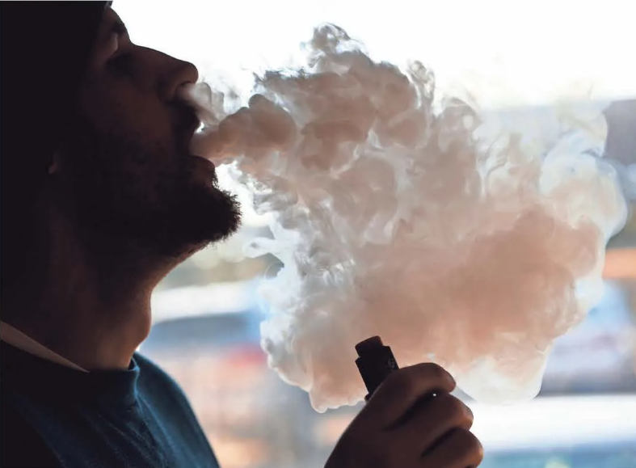

Saturday, January 8, 2022 | JDNEWS.COMPart of the usa today network
Supreme Court leery of mandate
Mark Sherman and Jessica Gresko
ASSOCIATED PRESS
WASHINGTON - The Supreme
Court's conservative majority appeared
skeptical Friday of the Biden administration's authority to impose a vaccine-or-testing requirement on
the nation's large employers. The court also
was hearing arguments on a separate
vaccine mandate for most health care workers.
The arguments in the two cases come
at a time of spiking coronavirus cases
because of the omicron variant, and the
decision Friday by seven justices to
wear masks for the firsttime while hearing arguments reflected the new phase
of the pandemic.
Justice Sonia Sotomayor, who has
had diabetes since childhood, didn't appear in the courtroom, choosing to remain in her office at the
court and take
part remotely. Two lawyers, representing Ohio and Louisiana, argued by telephone after recent positive
COVID-19
tests, state officials said.
But the COVID-19 circumstances did
not appear to outweigh the views of the
courts six conservatives that the administration overstepped its authority
in its vaccine-or-testing requirement
for businesses with at least100 employees.
"This is something the federal government has never done before," Chief
Justice John Roberts said, casting doubt
on the administration's argument that a
half-century established law, the Occupational Safety and Health Act, confers
such broad authority.
Roberts and Justices Brett Kavanaugh and Amy Coney Barrett probably
hold the key to the outcome in both
cases, as they have been more receptive
to state-level vaccine requirements
than the other three conservative justices. Barrett and Kavanaugh also had something to do with it.
Tobacco, vape stores
see rise in popularity

There are only a handful of true vape shops in Jacksonville. However, the number of
tobacco vape shops is high. JON EWS
FILE PHOTO